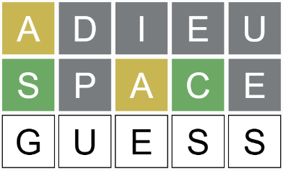

In a previous assignment we used our String functions charAt() and indexOf() to help us write a function that was able to draw the words of a Wordle game with the correct color clues.
Now that we have explored the use of arrays, we can implement a more game-like version that includes a series of attempts at the same word.
Open the Wordle Game Workspace in CodeHS
There you will find some familiar elements: a variable named secret, which holds the solution for the game, and two functions:
The previous Wordle assignment used a text input box for you to enter a guess to be tested, but that is no longer included. Instead we are going to make the game display a ‘current guess’ with letters in boxes, similar to how the actual game functions.
This means that we need a variable to hold the current guess, and a function that will draw it without the colorful boxes. At the top of the workspace, add a new variable:
let current = “ADIEU”;
This variable is to represent the word that the user is typing, but has not officially guessed yet. Eventually it will be populated as the user types, but for now we have given it a starting value of “ADIEU” to get us started.
One of the only functions provided for you in this workspace was the empty drawCurrentGuess() function, which is also being called from draw(). Its purpose is to draw the letters of our new current variable, letter by letter in boxes, but with a white background.
Implement the drawCurrentGuess() function, which should be almost a direct copy of the provided drawGuess() function. The only differences are:
current variable. This means that current.charAt(i) should be the source of letters.fill(255); for drawing the square and fill(0); for drawing the letters
After implementing this in the drawCurrentGuess() function, test you program by running it and making sure that ADIEU displays at the top of the canvas.
The current variable is intended to be the user’s input for the game. This means that it should start empty and add letters as the user types their answer.
First, modify the variable to no longer start with “ADIEU” as the guess. Instead assign an empty String.
let current = “”;
Now find the keyPressed() function, which is currently empty:
function keyPressed(){
//key and keyCode represent the most recent key pressed
}
Remember that this function is one that is called by p5 everytime a key is pressed on the keyboard. During the function we can use p5’s key variable to decide what to do. It will hold a String that represents the key that was pressed.
The first thing to do is to get key presses to increase the current guess. Add the following to the keyPressed() function
current += key.toUpperCase();
When a letter is pressed, its lowercase version is assigned to the key variable. This line will append the uppercase version of that letter to the current variable.
Test this out by running your program and typing a few letters. You should be able to watch the word that you’re typing show up as the current guess in the window.
Wordle is a game of Strings with five-characters, so we want to limit the guesses to five characters. Modify the keyPressed() function to only add letters to the current variable if it is under five characters long.
Blindly adding the pressed key works okay, but we need to worry about keys that are not alphabetical. For example, when you hit the enter key, the key variable is assigned the value of “Enter”. If we add that to current, it will add to the guess and cause problems.
We need to modify the keyPressed() function to be a little more careful with what it responds to. Add an if statement so that it only adds key to the current variable if key is between “a” and “z”. Run your program to make sure that keys like Control or Escape do not accidentally modify the current guess.
We want the ability to edit our guesses, in case we mistype. When the backspace key is pressed, the key variable will have the value "Backspace". Modify the keyPressed() method so that hitting a backspace, the value of current loses a character at the end. This may be accomplished by replacing it with a substring of itself that includes all but the last index.
The Enter key will be used to finalize the current guess, but for now we will simply have it reset the current guess. Modify the keyPressed() function so that when the key variable has the value of "Enter" the value of current is set to the empty String:
current = "";
At this point you should be able to type out a guess and have it appear on the screen. Check to make sure that it is limited to five characters, Backspace will remove the last character, and Enter will reset it back to nothing.
Along with the current guess, our Wordle game needs to display every previous guess that’s been made. Add the following to the top of the workspace with the other variables.
let guesses = ["ADIEU", “SPACE”];
This is an array of guesses that represents two guess that have already been made. Our next goal is to make sure that they have been drawn to the screen with colored squares to give clues about each letter’s accuracy. If you recall, the drawGuess() function was made for that.
Modify the draw() function to call drawGuess(), passing the first guess (index 0) as a parameter.
function draw(){
background(245);
drawGuess( guesses[0] ); //draw first guess
drawCurrentGuess();
}
As long as the drawGuess function works properly, you should see the colorful word ADIEU as the top line of the canvas.
At the moment the two guesses are being drawn at the same location, which makes them appear directly on top of one another. Our goal is to first draw the guess, and then to draw the current guess below it.To do this we’ll take advantage of the translate() function, which shifts the location of all draw commands that follow it. We want the current guess to be drawn 65 pixels lower, so insert translate( 0, 65 ) between the two function calls in draw():
function draw(){
background(245);
drawGuess( guesses[0] );
translate(0, 65);
drawCurrentGuess();
}
Now run the program and start typing. The current guess should appear below the ADIEU guess.
The draw() function currently will only draw a single guess from the guesses array before drawing the current one. The intention is that the guesses array will have anywhere from 0 to 6 guesses.
Modify the existing code in the draw function to replace the line: drawGuess( guesses[0]); with a loop that iterates through every index of the guesses array. At each index it should:
drawGuess( guesses[index] );Translating within the loop is important, as it will alternate between drawing a guess and moving down the canvas for the next one.
After your 'guesses' loop, the last thing you should do is drawCurrentGuess()
Run your program to test your code. If done properly your loop should draw ADIEU and SPACE (the current values in the guesses array) on the screen. Type some letters to make sure that the current guess is drawn below both of them.

At this point we can successful represent the current guess and a history of guesses, but they have no way of interacting.
Our next goal is to modify the keyPressed() function so that it is sensitive to the Enter key. When Enter is pressed, we will need to:
So far we have been using square bracket notation to access individual locations of an array, but they are built to be a little more flexible than that. Arrays come with a built-in function called push(), which takes in a parameter value. It will expand the array to have one more location and assign the parameter to be the last value of the array.
In the keyPressed() function, find the section where you respond to a key value of "Enter". Before you reassign current to be the empty string, add the line:
guesses.push( current );
This should expand guesses and add the value of current to it.
Run your program to test. It should still show up with ADIEU and SPACE already guessed, but you should now be able to type a new guess hit Enter. The moment you do, your guess should join the other guesses, and the ‘current’ one should be below that.
Now that we have a way of entering guesses that are compared to the clues, we only have a few more features to make our game more like actual Wordle.
The guesses array started with “SPACE” and “CRAZY” in order for us to have something to see while drawing the game, but in a real game of Wordle you start with no guesses. Modify the initial guesses array at the top of the workspace to start out as an empty array.
let guesses = [];
At this point you should have something resembling a Wordle game. It should start with no guesses on the screen, allow you to type a guess, and give the clues for that guess when enter is pressed.
As much as Mr. Sacco likes being the solution to our Wordle game, it is a little predictable. The last step to completing our game is for it to start by choosing a random word to be assigned to the secret variable instead of “SACCO”. To help with this, you have been provided with a gigantic array at the bottom of the program:
let words = ["ABACK",
"ABASE",
"ABATE",
"ABBEY",
"ABBOT",
"ABHOR", ...etc
The provided words array has 2,309 different five-letter words for you to choose from. Modify the setup() function to choose a random String from the words array to be assigned to secret. This will involve creating a random index less than 2309 (don’t forget to floor() it so that you get an integer). The value from words at that index should then be assigned to the secret variable.
To make sure that you can check the solution you can use console.log(secret); to log the solution to the puzzle. That way you can double check that everything is working properly.
The last step for our game will be for it to detect when you win or lose the game and should be announced using the alert() function to announce:
This should occur in the keyPressed() function when the Enter key is pressed (but before the current guess is reset to "".
Winning occurs if the current guess matches the secret variable.
Losing occurs after six incorrect guesses have been made. You may use the length of the guesses array to determine how many guesses have been made. Keep in mind that you can have six guesses and still win if the last one is the correct guess, so make sure that you only check for a loss if you already know that you haven't won.
Test your program to make sure that you can win or lose at the correct times, including if you get the correct guess on the sixth try.